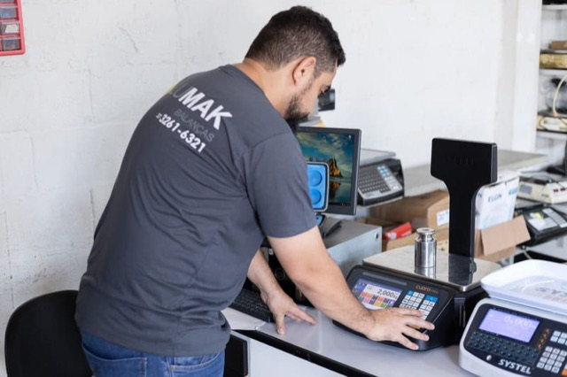
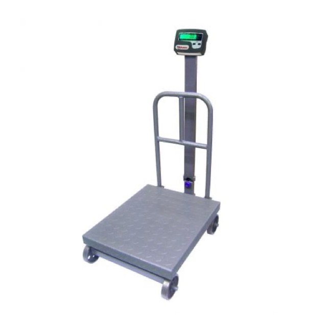

Precisão técnica para empresas que não podem errar no peso.
A Lumak Balanças une venda, manutenção, aferição, calibração e desenvolvimento de soluções sob medida: apps, programas, sistemas de pesagem, barra e indicador próprios para balança de gado com controle total no app.

Uma empresa local com rotina de campo, laboratório e indústria.
A Lumak nasceu em Lagoa da Prata para atender quem depende de medição confiável todos os dias. Em vez de tratar balança como item de prateleira, a equipe olha para a operação: o que será pesado, com que frequência, em qual ambiente, com qual nível de precisão e quais controles o cliente precisa acompanhar.
Esse cuidado aparece na escolha do equipamento, na instalação, na manutenção preventiva, na calibração e no suporte depois da venda.
Para onde caminhamos e por quê.
Superar as expectativas dos nossos clientes, proporcionando soluções excepcionais e personalizadas. Comprometemo-nos a oferecer qualidade, confiabilidade e inovação, contribuindo para o sucesso e satisfação de quem confia em nossos serviços.
Vislumbramos ser a principal empresa do setor de balanças no Centro-Oeste Mineiro, sendo referência em excelência e inovação, destacando-nos pela busca incessante pela qualidade e a ética. Nosso objetivo é expandir nosso portfólio de instrumentos a serem calibrados, aumentar nossa capacidade de atendimento, consolidando assim nossa posição como líderes no mercado regional.
Pautamos nossas ações na mais alta ética e transparência, construindo relacionamentos de confiança com clientes, colaboradores e parceiros.
O cliente está no centro de nossas atividades. Comprometemo-nos a compreender suas necessidades e superar suas expectativas.
Buscamos a excelência em cada serviço prestado, mantendo padrões elevados de qualidade em todos os aspectos.
Reconhecemos que nosso maior ativo são as pessoas. Investimos no desenvolvimento e bem-estar de nossos colaboradores.
Estamos sempre atentos às mudanças e oportunidades, buscando constantemente formas de inovar e melhorar nossos serviços.
Do diagnóstico ao laudo, sem improviso.
O atendimento combina conhecimento técnico, equipamentos adequados e documentação clara para a sua operação.
Entendimento
Levantamos capacidade, ambiente, rotina de uso e urgência do atendimento.
Indicação técnica
Definimos se o caso pede venda, ajuste, manutenção, aferição ou calibração.
Execução
A equipe realiza instalação, reparo ou verificação com padrão técnico e peças adequadas.
Registro
Entregamos orientação e documentação para controle interno e rastreabilidade.

O suporte certo antes e depois da balança entrar em operação.
Atendimento técnico para diferentes fabricantes, modelos e cenários de uso.
Processo com padrões de massa e relatório no modelo RBC.
Deslocamento para Lagoa da Prata e mais de 128 cidades de Minas Gerais.
Desenvolvimento de apps, programas, barras, indicadores e sistemas de pesagem para automatizar processos.
Apps, programas e sistemas de pesagem sob medida para a sua operação.
Você diz o que precisa controlar ou automatizar; a Lumak desenvolve a solução. Criamos sistemas para agilizar pesagens, reduzir retrabalho, facilitar o acompanhamento dos dados e adaptar o processo à rotina da indústria, comércio, agropecuária ou operação especial.
Precisa vender, instalar, revisar ou calibrar uma balança?
Chame a equipe da Lumak e receba uma orientação técnica para a sua operação.